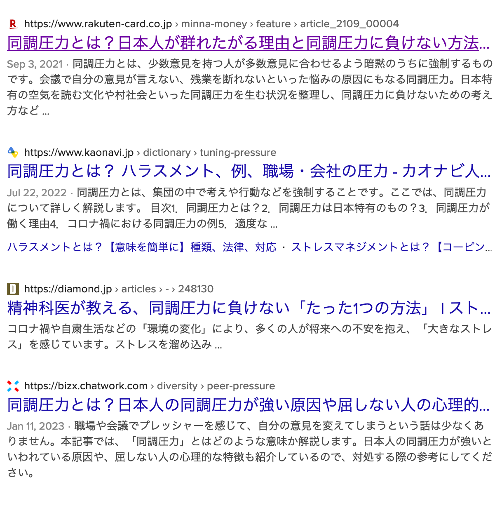
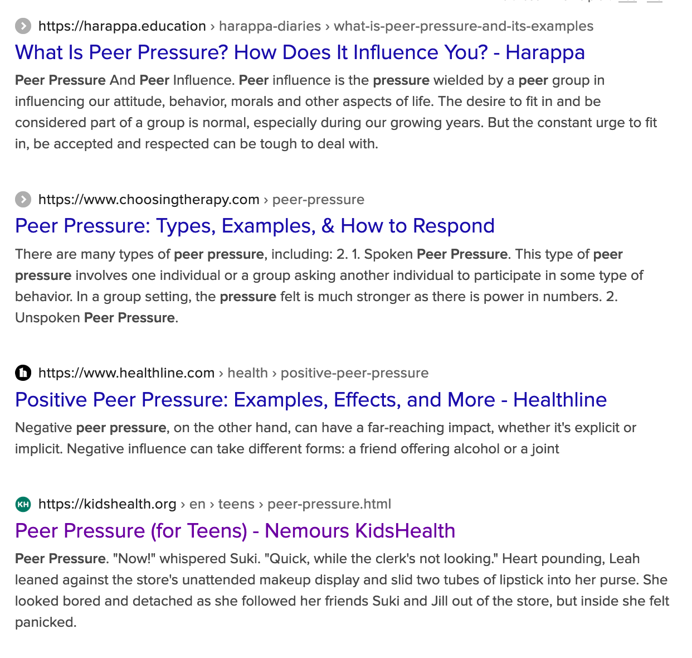

Peer Pressure
Published on 4/23/23
Peer pressure has affected me in both good ways and bad. There are times in class when the silence is loud and I feel intimidated to raise my hand to answer the question, but there are also times when the friends around me are studying which make me feel a sense of urgency to study more.
I noticed that I feel peer pressure when I am comparing myself to others, thinking about what others would think if I answered the teacher and made a mistake, or thinking about feeling worse about myself if I get worse scores compared to my friends.
It is a common misunderstanding that Japanese people are troubled with feeling more peer pressure compared to people from other countries, while that is not really the case. In my opinion, it is more about the mindset of Japanese people
against it.
For example, searching “peer pressure” online in Japanese results in many websites that explain how to overcome it, while searching for it in English will result in how it could have positive effects.

The result of searching for peer pressure in Japanese. There are many that teach how to overcome it.

The result of searching for peer pressure in English. There are more that talk about the positive parts of it.
Dealing with feeling negative peer pressure is difficult, since most of the time it is not only one person who is creating it and there are times when it is not even on purpose. One good example is wearing face masks. The government recently announced that wearing face masks is optional. However, I still see tons of people wearing them. Honestly I feel like this is not because peer pressure is strong in Japan but instead because the peer pressure is to keep wearing masks, while it is the opposite in most western countries. (I have legitimate reasons since I am wearing braces and also caught a cold recently, lol)
One of my favorite books is themed on peer pressure, and is about a girl feeling the dilemma between “wanting to look like everyone else” but also feeling that that is not her true self. She settles with accepting her new self as herself but also recognizing her old self. I think that the lesson that could be learned from this is that being pressured by peers in a positive way is okay if you keep your criterion and be able to judge if you are drifting to a negative direction or not.

Fun fact: This book is 2nd of a series that was made into an anime in 2018. A movie for the 8th volume will be released this summer.